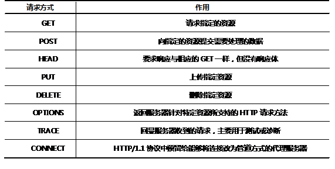

请求数据包中的请求行的第一个参数就是请求方式，是客户端向Web服务器发送请求时的意向说明，以此告知服务器该如何处理及解析提交的这些数据，而客户端提交的数据也会因为采用的提交方式不同来处理。后续的一切解析都是基于请求方式的不同而不同。在RFC标准文档中有详细的规定来说明请求方式的种类及作用。
区分请求种类也会为浏览器采用不同的缓存方式处理后续请求提供一个依据，从而提升响应速度。所以对于编程人员来讲，使用正确的请求方式是Web应用的一个重要方面。
根据RFC文档的说明，请求的种类包括如 表 – 1 所示内容。
表 – 1 请求方式的种类
HTTP协议中定义了的这些方法（有时也叫“动作”）用来表示对指定数据的操作。有些方法（比如HEAD, GET, OPTIONS, and TRACE) 被定义为安全方法，这些方法针对的只是信息的返回，并不会改变服务器的状态（换句话说就是这些方法不会产生副作用）。不安全的方法（例如POST, PUT and DELETE) 应该用特殊的方式向用户展示，通常是按钮而不是链接，这样就可以使用户意识到可能要负的责任（例如一个按钮带来的资金交易。）
使用GET提交数据时，form中的数据将编码到URL中。在使用上，当且仅当请求幂等（字面意思是请求任意次返回同样的结果，本质是请求本身不会改变服务器数据和状态）时使用GET。重复访问时使用GET方法请求的页面，浏览器会使用缓存处理后续请求。当编程人员正确的使用GET后，浏览器会给出很好的缓存配合，响应速度更快。
原则上，服务器端处理GET和POST请求是没有分别的。但由于数据通过不同的方法编码，需要有不同的解码机制。所以，方法变化将导致处理请求的代码变化。比如对于CGI，处理GET时通过环境变量获得参数，处理POST请求时则通过标准输入(stdin) 获得数据。
从使用经验上有如下总结：
如下情况中浏览器会发送GET类型的请求：
POST方式提交的数据是在HTTP协议的Hearder中进行传输的。在使用上，当请求会改变服务器数据或状态时（更新数据，上传文件）应该使用POST。使用POST方法的Form提交时，浏览器基于POST将产生永久改变的假设，将让用户进行提交确认。
提交数据时，Form提交的第一步是创建数据集，并根据ENCTYPE对数据集进行编码。ENCTYPE有两个值：multipart/form-data，application/x-www-form-urlencoded（默认值），前者可同时用于GET、POST，后者只用于POST。进行数据传输时，对于GET方法，数据集使用content type application/x-www-form-urlencoded编码并附在URL后面，在这种模式下，数据严格限制为ASCII码；对于POST，使用content-type编码字符集并将其构造成消息发送
服务器端处理数据时，处理POST请求时则通过标准输入(stdin) 获得数据。
从使用经验上有如下总结：
将表单的Method属性设置为POST时，浏览器会发送POST请求。
Servlet作为Web服务器的补充功能在运行时需要受到Servlet容器的管理，其运行的流程如下：
Java语言在内存当中保存的每一个字符使用的都是Unicode字符集。一个中文字在内存中使用2个字节来表示。
编码：将Unicode字符集对应的字节数组转换成某种本地字符集（比如UTF-8，GBK）对应的字节数组的过程叫做编码
解码：将某种本地字符集对应的字节数组转换成Unicode字符集对应的字节数组的过程。
如果想输出就涉及到编码问题。编码和解码使用的字符集不一致就产生了乱码问题。
out.println（“”）这行代码是编码过程。现在这个out要输出的内容使用的是Unicode字符集，于是转换为默认的iso-8859-1。之所以使用这个格式是因为tomcat默认是英文的。所以调用out.println时，容器采用默认情况下的ISO-8859-1字符集去编码带有中文的输出内容时就产生了乱码。
在service（）方法中第一行的位置上添加如下代码：
- response.setContentType(“text/html;charset=UTF-8”);
其中charset可以使用其他支持中文的字符集，如GBK。setContentType（）有两个作用：
使用该段代码修改默认的编码方式时，一定要保证在调用print之前编写，所以该段代码尽量放在service方法的第一行的位置。在charset之前使用的是分号隔开，如果写错，则会出现保存文件的界面，原因是浏览器不能识别消息头的值，于是让用户来处理。
能够输出带有中文内容页面的完整代码如下：
- import java.io.IOException;
- import java.io.PrintWriter;
- import javax.servlet.ServletException;
- import javax.servlet.http.HttpServlet;
- import javax.servlet.http.HttpServletRequest;
- import javax.servlet.http.HttpServletResponse;
- public class HelloServlet extends HttpServlet{
- public void service(HttpServletRequest request,
- HttpServletResponse response)throws ServletException,
- IOException{
- response.setContentType("text/html;charset=utf-8");
- //获得输出流
- PrintWriter out = response.getWriter();
- out.println(“达内科技欢迎你”);
- //关闭流
- out.close();
- }
- }
对于表单提交的数据，Servlet可以从容器构建的request对象中获取，如下两个方法可以在不同情况下获取表单数据：
主要用于获取表单中控件的数据。其中参数名一定要与客户端表单中的控件name属性相一致。所以在构建表单各元素时，name属性一定要有。而name属性和id属性的区别就在于，id属性一般是作为客户端区分控件的标识，name属性是服务器端区分各控件的标识。如果参数名写错，则该方法会返回null。
用于提供用户输入的HTML页面代码如下：
- <html>
- <head>
- </head>
- <body>
- <form action="hello" method="post">
- 用户名:<input name="username"/><br/>
- <input type="submit" value="提交"/>
- </form>
- </body>
- </html>
使用该方法获取表单数据的完整代码如下：
- package web;
- import java.io.IOException;
- import java.io.PrintWriter;
- import javax.servlet.ServletException;
- import javax.servlet.http.HttpServlet;
- import javax.servlet.http.HttpServletRequest;
- import javax.servlet.http.HttpServletResponse;
- public class HelloServlet extends HttpServlet{
- public void service(HttpServletRequest
- request,HttpServletResponse response)
- throws ServletException,IOException{
- /*
- * request.getParameter方法：
- * 1.作用：依据请求参数名获取请求参数值。
- */
- String username = request.getParameter("username");
- //处理请求
- String msg = "<div style='font-size:80px'>" +
- "你好 " + username + "</div>";
- response.setContentType("text/html;charset=utf-8");
- //获得输出流
- PrintWriter out = response.getWriter();
- out.println(msg);
- //关闭流
- out.close();
- }
- }
用于获取表单中一组参数名相同的控件提交的数据组，如复选框，所以该方法返回的是字符串数组。如果用户没有选择这一组同名控件的任何一个，则该方法返回null。
用于提供用户输入用户名和爱好选项的HTML页面完整代码如下：
- <html>
- <head>
- </head>
- <body>
- <form action="hello" method="post">
- 用户名:<input name="username"/><br/>
- 爱好:
- 吃饭<input type="checkbox" name="hobby" value="eating" checked="checked"/>
- 睡觉<input type="checkbox" name="hobby" value="sleeping"/>
- 打豆豆<input type="checkbox" name="hobby" value="fighting"/>
- <br/>
- <input type="submit" value="提交"/>
- </form>
- </body>
- </html>
使用该方法获取复选框值的完整代码如下：
- import java.io.IOException;
- import java.io.PrintWriter;
- import javax.servlet.ServletException;
- import javax.servlet.http.HttpServlet;
- import javax.servlet.http.HttpServletRequest;
- import javax.servlet.http.HttpServletResponse;
- public class HelloServlet extends HttpServlet{
- public void service(HttpServletRequest
- request,HttpServletResponse response) throws ServletException,IOException{
- String username = request.getParameter("username");
- String[] hobby= request.getParameterValues("hobby");
- //处理请求
- String msg = "<div style='font-size:80px'>" +
- "你好 " + username + "</div>";
- response.setContentType("text/html;charset=utf-8");
- PrintWriter out = response.getWriter();
- out.println(msg);
- for(int i=0;i<hobby.length;i++){
- out.println("<h1>" + hobby[i] +"</h1>");
- }
- //关闭流
- out.close();
- }
- }
当表单提交时，浏览器会对表单中的中文参数值进行编码，而使用的编码是打开页面时所使用的字符集，如当前页面使用的UTF-8的字符集进行显示的，那么表单提交的数据就会以UTF-8的方式进行编码后传输，而Web服务器在默认情况下对提交的表单数据会使用ISO-8859-1的字符集来解码，编码与解码的方式不一致就产生了表单提交时的中文乱码问题。
步骤一、确保表单所在的页面按照指定的字符集打开
在HTML页面中使用meta标记可以确保浏览器按照指定的字符集进行解码页面，并限定表单提交时的数据编码方式
- <meta http-equiv="content-type" content="text/html;charset=utf-8">
在服务器端需要在调用getParameter方法读取参数之前，告诉浏览器如何解码，使用如下代码即可完成该设置：
- request.setCharacterEncoding("utf-8");
注意该方法一定要要放在所有request.getParameter方法之前。
这种方式只针对POST请求有效。
步骤一、确保表单所在的页面按照指定的字符集打开
在HTML页面中使用meta标记可以确保浏览器按照指定的字符集进行解码页面，并限定表单提交时的数据编码方式
- <meta http-equiv="content-type" content="text/html;charset=utf-8">
步骤二、完成ISO-8859-1到UTF-8格式的转换
- String username = request.getParameter(“username”);
- username = new String(username.getBytes(“iso-8859-1”),“UTF-8”);
由于GET方式提交的任何数据在服务器端一定会以ISO-8859-1的方式进行解码，所以服务器端可以先按ISO-8859-1的方式获取字节数组，在将该数组转变成UTF-8对应的字符串形式。
解决表单提交时的中文乱码问题的完整代码如下：
- import java.io.IOException;
- import java.io.PrintWriter;
- import javax.servlet.ServletException;
- import javax.servlet.http.HttpServlet;
- import javax.servlet.http.HttpServletRequest;
- import javax.servlet.http.HttpServletResponse;
- public class HelloServlet extends HttpServlet{
- public void service(HttpServletRequest request,
- HttpServletResponse response)throws
- ServletException,IOException{
- request.setCharacterEncoding("utf-8");
- String username = request.getParameter("username");
- username=new String(username.getBytes("iso-8859-1"),"utf-8");
- String msg = "<div style='font-size:80px'>" +
- "你好 " + username + "</div>";
- response.setContentType("text/html;charset=utf-8");
- PrintWriter out = response.getWriter();
- out.println(msg);
- out.close();
- }
- }
步骤一、将JDBC驱动（.jar文件）放到WEB-INF\lib下
原因：ClassLoader找到字节码文件，然后加载到JVM的方法区中，变成一个对象。Tomcat都有自己的类加载器，会去WEB-INF下面lib中找字节码文件。毕竟jar包中都是字节码文件。
步骤二、编写JDBC代码，需要注意异常的处理